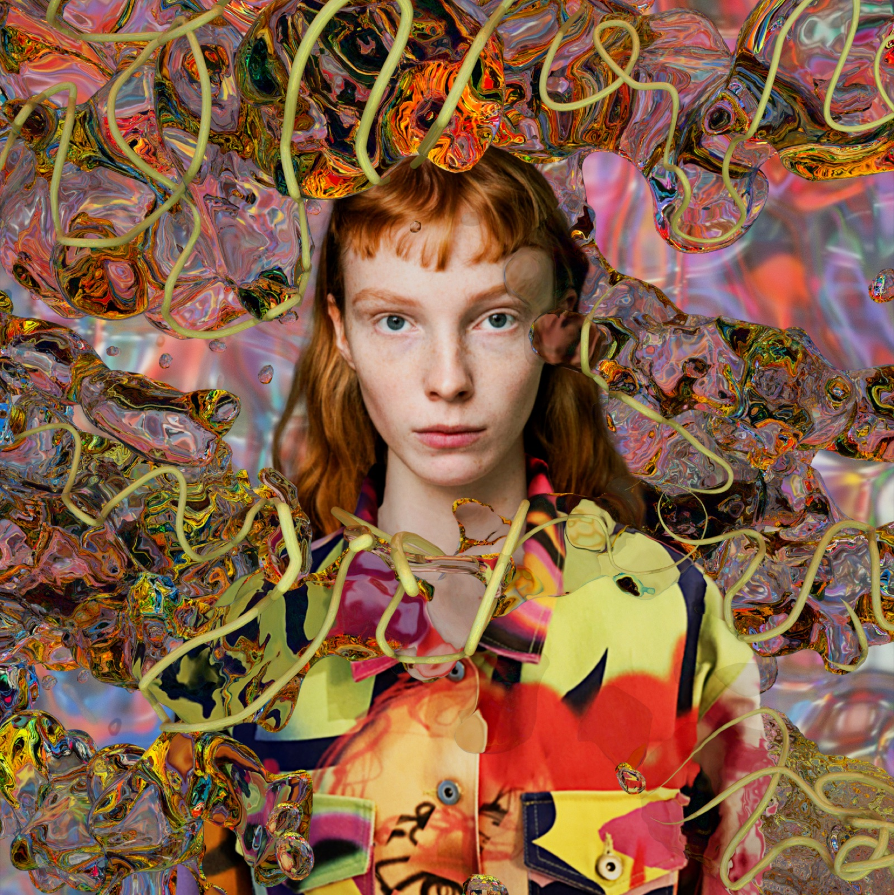
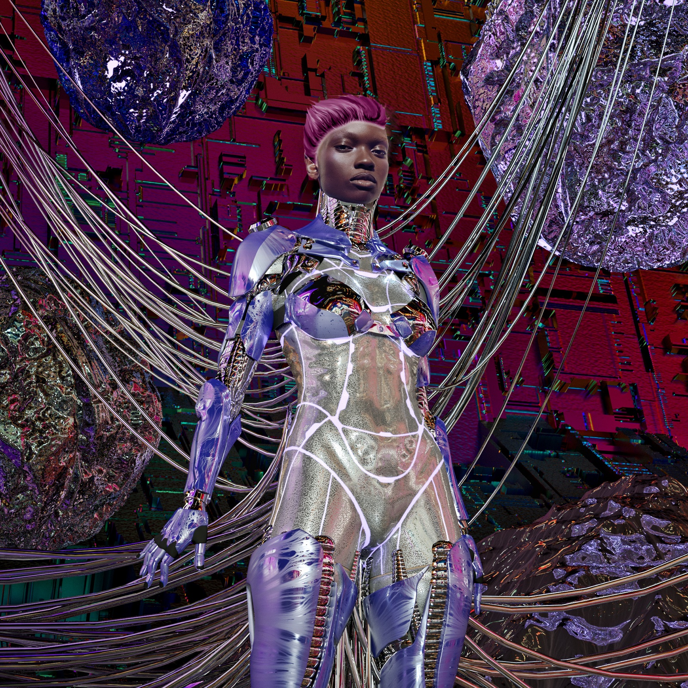
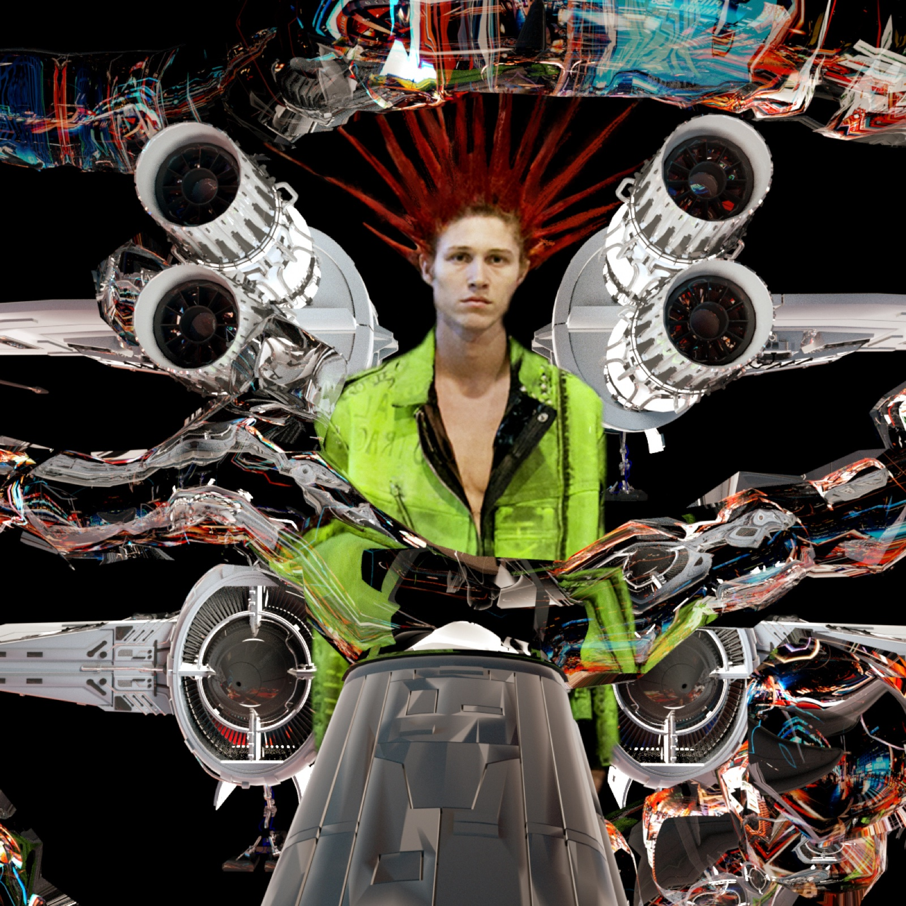
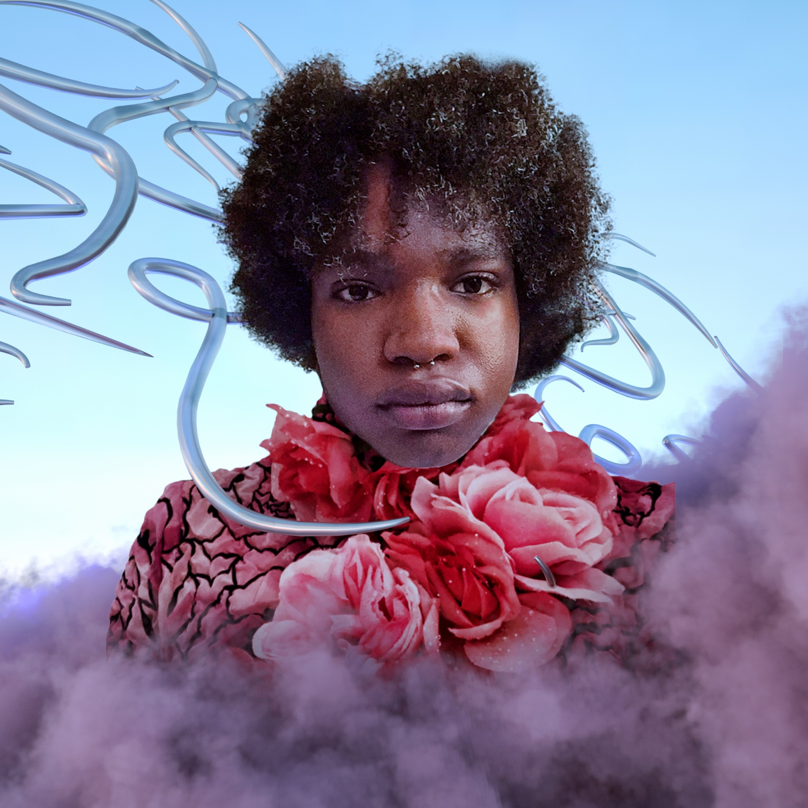

CAROLINA SARRIA
Mixed media portraits made in collaboration with the clothing brand CAROLINA SARRIA for its runway show in New York: art direction, 3D modelling and render. The collaboration continued with the NFT drop “Unidentified Reflection”.







